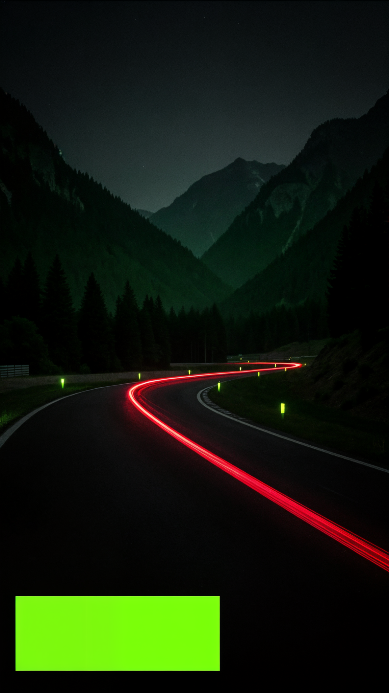

From 14 days to real time.
Built in-house VPA creation through Axis UPI APIs, removing manual banking and operations handoffs.
I build payment infrastructure, distributed workflows and operational systems that keep working when the real world gets messy.
↘
Build
At CRED, I work where payments, partners, operations and reliability meet. The interesting work is usually in the handoffs.
Built in-house VPA creation through Axis UPI APIs, removing manual banking and operations handoffs.
Designed AWS Step Functions and SQS workflows that moved integration turnaround from 4–5 days to 2 hours; Shopify and GoKwik onboarding reached 5 minutes.
Designed low-latency payment services with event-driven orchestration, idempotency, DLQs, observability and production ownership.
Integrated the HDFC UPI stack into credit-card bill payments: ₹50L+ monthly cost savings and a 3% improvement in payment success rates.
After hours
AI-powered learning with a policy-driven state machine, multi-agent orchestration and observability-first workflows.
↗02An agentic backend for schema-compliant text classification, async auth and containerized deployment.
↗03Agent onboarding, Kanna translation overlay, homelab work, RAG and useful automations.
↗Learn
Structured outputs, policy-driven orchestration, observability and cost-aware AI workflows.
Queues, APIs, failure modes, developer experience and the boring details that decide whether things hold up.
Sport, trails, cities and conversations usually create the next good technical question.
Contact
Always open to interesting conversations about payments, distributed systems, AI, sport or the projects people keep thinking about after work.